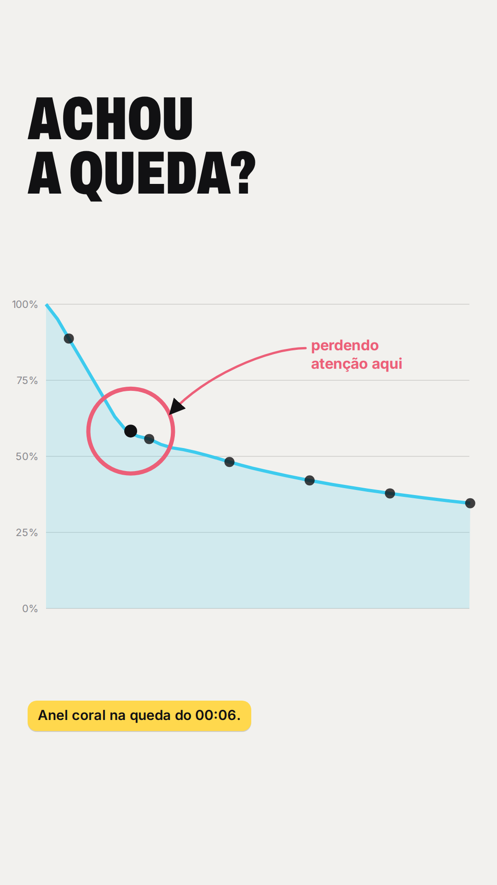
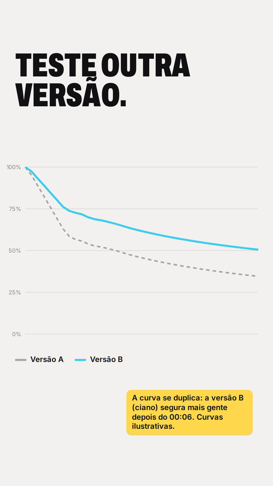
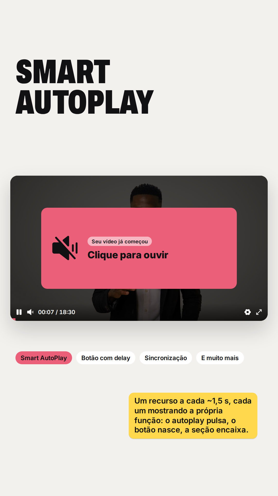
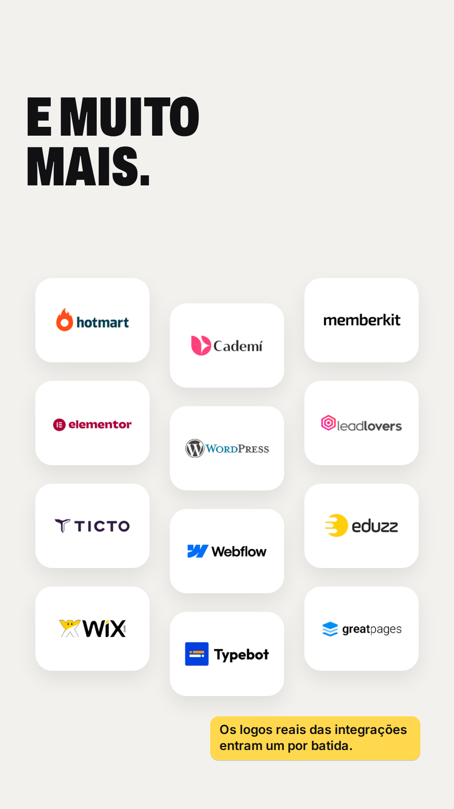
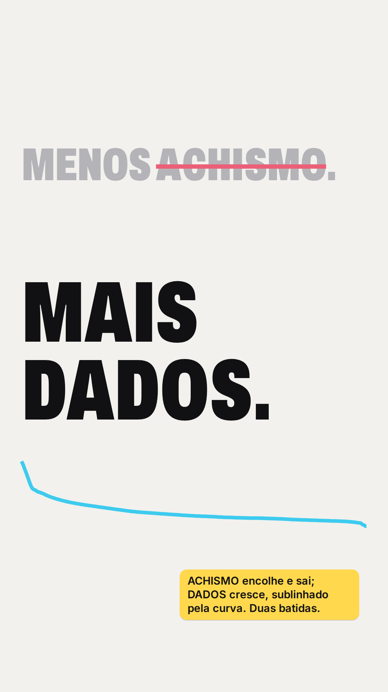
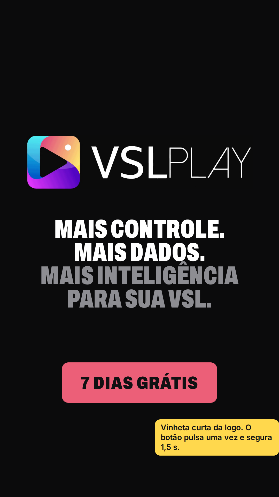

Parte 2 de 2 · cerca de 40 s · vertical 9:16 · espectadores caindo de um precipício que, na cena 3, se revela o gráfico de retenção

07 · 0:20 Cena 4
Anel na queda: "perdendo atenção aqui".
"onde está perdendo atenção…"

08 · 0:24 Cena 4
Versão A x versão B: a nova segura mais gente.
"pode testar novas versões…"

09 · 0:27 Cena 5
Recursos em sequência, cada um mostrando a função.
"Smart Autoplay, botão com delay, sincronização…"

10 · 0:31 Cena 5
Logos reais das integrações, um por batida.
"e muito mais."

11 · 0:33 Cena 6
ACHISMO encolhe, DADOS cresce.
"Menos achismo. Mais dados para otimizar sua VSL."

12 · 0:37 CTA
Logo e tela final do briefing.
"Conheça o VSL Play e teste grátis por 7 dias."